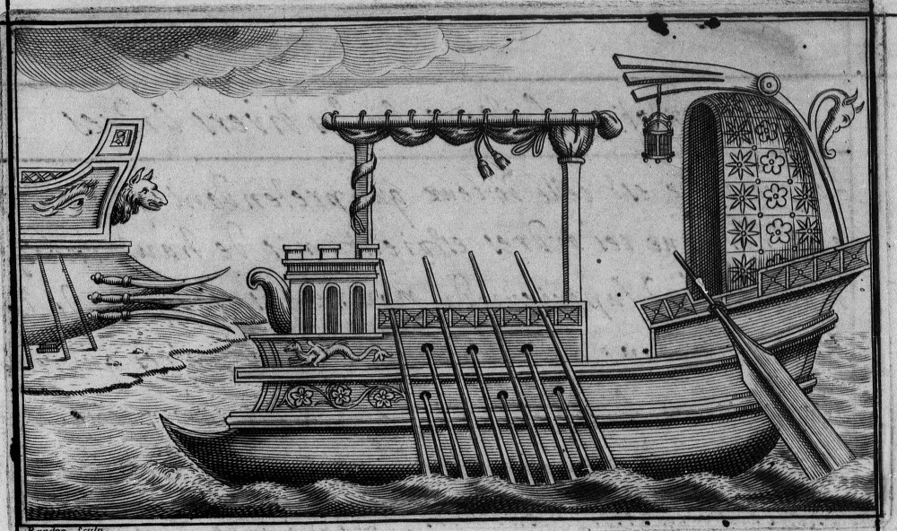
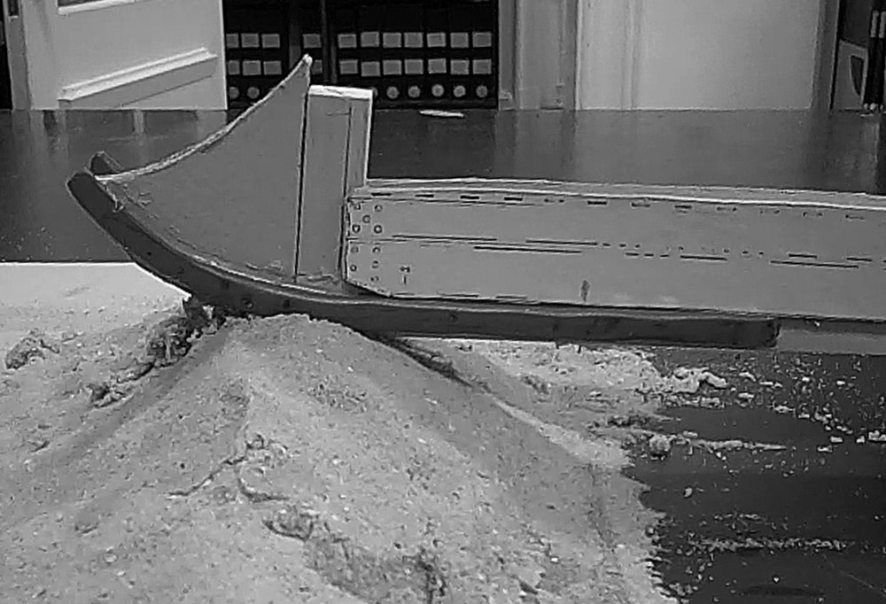
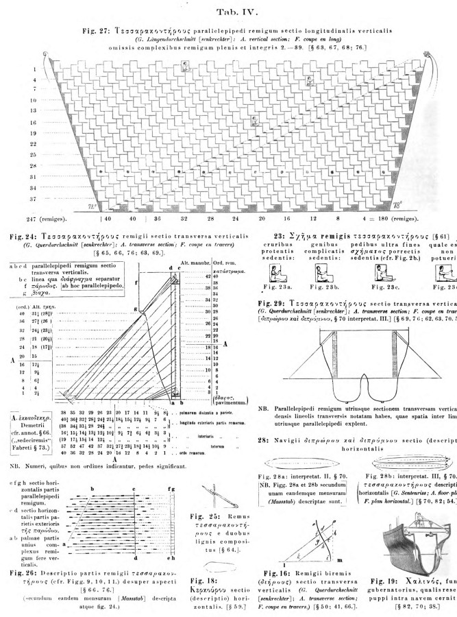
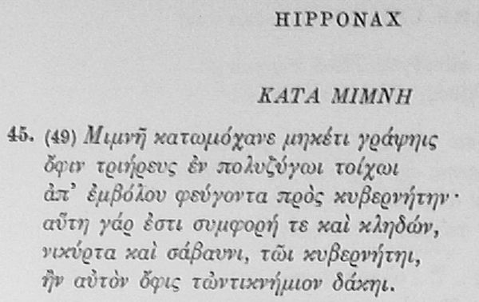
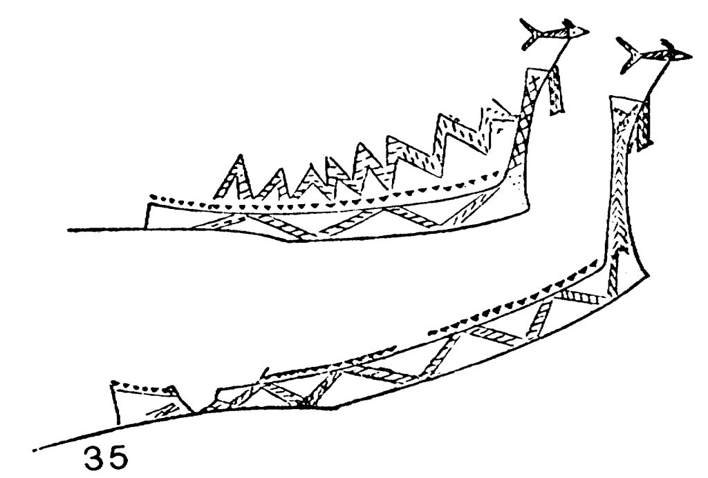
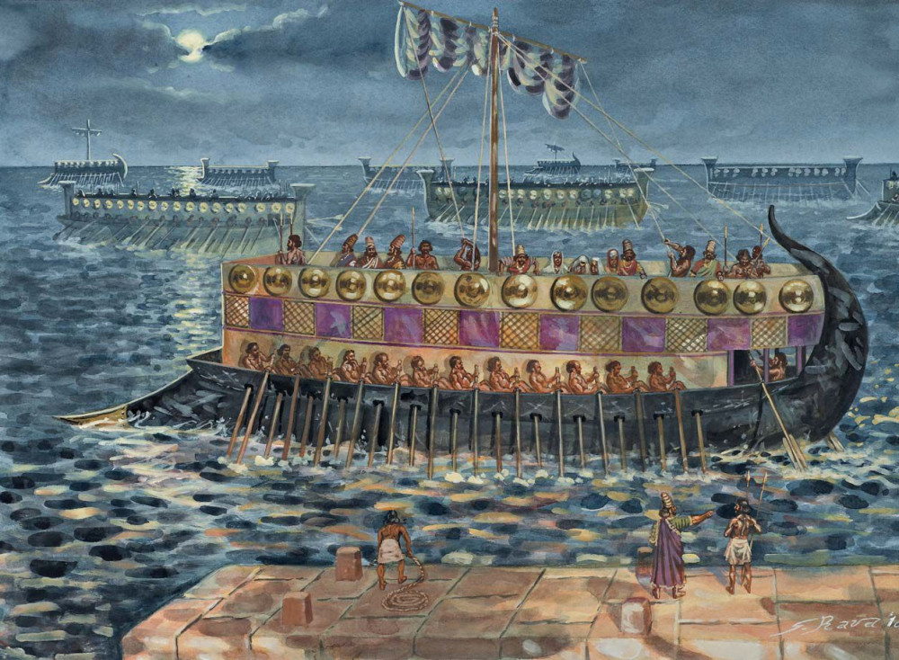
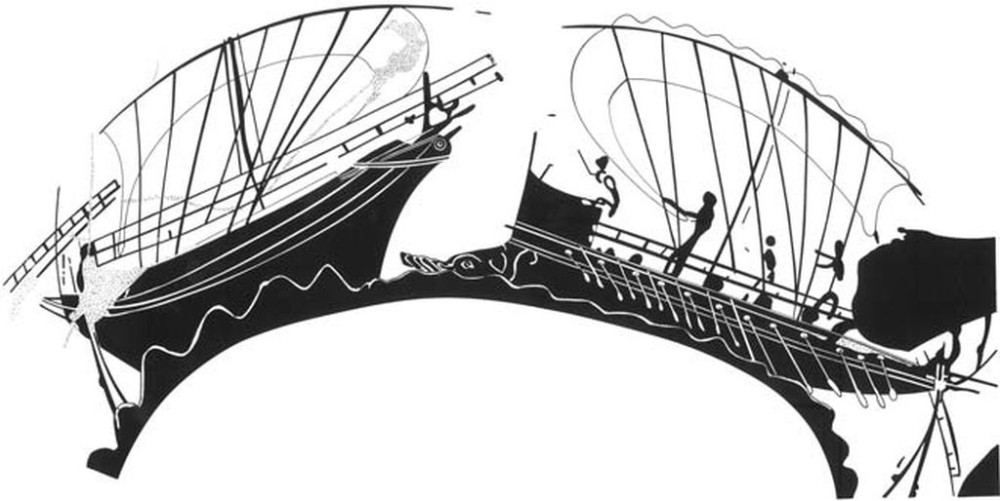
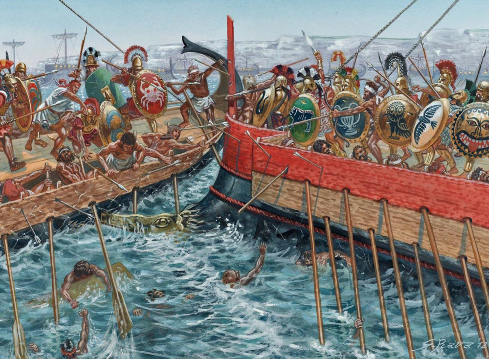

Ранее мы установили, что в соответствии с принятыми сейчас «стандартами» на греческой триере находилось 170 гребцов, хотя в конкретных дошедших до нас документах той эпохи имеются отклонения от этой цифры. Дальше нам предстоит понять, как эти гребцы размещались на триере. Здесь также нет достоверных свидетельств для принятия одной конкретной модели, и, следовательно, имеются варианты.
Прежде попытаемся обобщить наши данные о том, что собой представляла древнегреческая, или, как ее еще называют, афинская триера и понять, почему она привлекает к себе такое внимание.

Триеры. Гравюра из альбома Барраса де ла Пенна
Материальных свидетельств того, как была устроена триера, до нас не дошло. Может быть, здесь к месту будет сказать, почему среди многочисленных археологических находок затонувших судов античности практически нет военных кораблей, в том числе и триер. Интересную гипотезу на этот счет выдвинул Джон Ланделс (John G. Landels). Согласно этой гипотезе военные корабли, получив пробоину, не шли ко дну, а сохраняли положительную плавучесть. Греческий термин καταδύω , καταδύειν , который практически всегда переводят как «тонуть», на самом деле означает «погрузить», «опустить в воду». Для понятия «пустить на дно» древние греки использовали другие термины. Когда триера получала пробоину, она, конечно, теряла боеспособность, но ее могли отбуксировать на мелкое место и там сделать необходимый ремонт. Примеры таких действий мы видим в описании Фукидида (II.83-92) битвы при Навпакте в 429 году до н. э. (во время Пелопоннесской войны), в котором обе стороны захватывали и буксировали «потопленные» в бою триеры. В отличие от военных кораблей, купеческие суда после получения пробоины шли ко дну под тяжестью своего груза. Останки немногих, как полагают, военных кораблей, затонувших у Сицилии в гавани Марсала во время сражения при Эгатских островах в 241 году до н.э., на заключительном этапе Первой пунической войны, с таким же успехом могут быть отнесены к коммерческим судам. Рассмотрим доводы сторон.
Honor Frost, руководитель поисковых работ 1970-1974 гг. в районе обнаружения предположительно военных кораблей из Карфагена, в подтверждение своей гипотезы выдвинула, практически один довод: на месте крушения обнаружена конструкция корпуса, которая может быть интерпретирована как место крепления тарана. Самого тарана не нашли, но объяснялось это тем, что таран мог остаться в корпусе корабля противника, так как способ его крепления позволял таранящему судну легко избавиться от этого оружия, чтобы не пойти вместе с противником ко дну. Вроде жала, которое пчела оставляет в теле жертвы. Помимо этого, потерпевшие крушение корабли были слишком узкими для того, чтобы нести коммерческий груз; этот вывод подтверждается также тем, что на месте крушения не было найдено никаких следов груза.
Однако противники подобной гипотезы приводят в подтверждение своей правоты другие доводы. Нахождение останков вблизи берега может объяснить отсутствие на кораблях груза: ценный груз мог быть поднят дайверами последующих эпох, что подтверждается другими аналогичными примерами на местах кораблекрушений. На останках кораблей были следы свинцовой обшивки, что не характерно для военных кораблей, так как это существенно снижало бы их скорость. В то же время корпуса купеческих судов часто покрывали свинцовыми листами для предотвращения обрастания и червоядения. Что касается гипотетического устройства для крепления тарана, то оно могло служить приспособлением для крепления волнореза, облегчавшего всхождение корпуса корабля на прибрежный песок при причаливании.

Модель тарана (волнореза) на корабле из Марсалы.
Гипотеза «одноразового тарана» также не находит подтверждения в дошедших до нас описаниях тактики морского боя.
Таким образом, достаточных оснований для того, чтобы отнести останки кораблекрушения при Марсале к военным кораблям нет.
Конечно, изучение этих находок полезно и для истории военного кораблестроения: именно остатки купеческих судов являются источником, пусть и косвенной, но все же ценной информации о способах постройки корпусов военных кораблей той эпохи
За неимением прямых свидетельств об устройстве триер приходится исходить из их описаний в литературе и отображений в произведениях искусства той эпохи. Здесь, к сожалению, также не очень богатый материал, допускающий, к тому же, двоякое толкование предмета. В описаниях триер древними авторами сплошь и рядом намеки и аллюзии, отсылающие нас к таким вещам, которые были общеизвестны и общепонятны их современникам, но совершеннейшим образом ставящие в тупик читателей нашего времени. К тому же морской язык, который и для современников, не связанных с морем, является вещью в себе, по прошествии тысячелетий зачастую становится нераскрываемым кодом. Не потому ли в немецкой литературе появился такой термин – das Trierenrätsel (Загадка триеры), кальки с которого проникли во многие другие языки. В наше время он имеет более нейтральное звучание – это уже не «загадка», а «вопрос». Хотя «код триеры» и не такой замысловатый, как в романе Дэна Брауна, но голову над ним ломают по сей день многие профессионалы и дилетанты.
В литературе существует несколько теорий размещения гребцов на триере.
Первая теория возникла в начале шестнадцатого века и получила активное развитие в XIX веке в работах итальянского адмирала Финкати и американского ученого Уильяма Тарна с учениками, которые утверждали, что прямыми наследниками античных триер, воспринявшими их основные характеристики, включая систему гребли, стали венецианские галеры системы alla sensile, которые носили название triremi. Таким образом, эта группа историков считала, что гребцы на триере размещались в один ряд, но на каждой банке сидело по три гребца, каждый из которых работал своим веслом.
Сторонники второй теории, которую можно считать ортодоксальной, широко распространенной, принятой большинством авторов и корни которой уходят в пятый век нашей эры, полагают, что гребцы триеры сидели на трех ярусах, один над другим. Серьезным препятствие для безоговорочного принятия этой системы гребли является тот факт, что отсутствуют простые объяснения, как такая система гребли распространялась на корабли, получившие название по тому же принципу, что и триремы – квадриремы, квинкеремы и т.д. Ведь бесконечно наращивать число «этажей», на которых сидели гребцы, невозможно. Хотя попытки технически обосновать возможность существования таких монстров достаточно многочисленны. Вот один их таких образцов – «сорокоэтажная» галера Птолемея

Иллюстрация из книги GRASER DE VETERUM RE NAVALI (1864)
А если даже не брать такого монстра, то литературные источники упоминают корабли вплоть до дексер, подразумевавших десять ярусов.
Имела своих сторонников и третья теория, согласно которой гребцы сидели в один ярус, но каждым веслом гребли три человека.
Позже мы более подробно рассмотрим доводы сторонников каждой теории и попытаемся сделать заключение, можно ли, опираясь на эти доводы, отдать предпочтение той или другой гипотезе. Сейчас же обобщим информацию о появлении триеры во флотах средиземноморских держав, чтобы не возвращаться к этому вопросу по ходу дальнейшего рассказа.
Первые сведения о греческих военных кораблях появляются в древнеегипетских Фивах в эпоху правления фараона Рамзеса III (1184 - 1153 до н. э.). Мы писали об этом раньше, когда рассказывали о кораблях «народов моря». Согласно одной из гипотез, «народы моря» и были как раз представителями той этнической группы, которую Гомер позже называл ахейцами и данайцами. (Термин «греки», как известно, придумали латиняне и от них уже он попал в Грецию. Сами греки называли себя эллинами)
Изобретение триеры как нового типа военного корабля относят к значительно более позднему периоду. По вопросу о месте появления триеры все исследователи делятся на две группы. Одна считает, что первыми были греки, другая – что финикийцы. Материальных археологических оснований для того, чтобы отдать предпочтение одной из этих групп, нет, поскольку по названной выше причине не сохранилось останков ни финикийских, ни греческих триер. Остаются литературные источники и произведения изобразительного искусства.. Сторонники финикийского происхождения триеры исходят из общего положения о том, что изображения кораблей с несколькими ярусами весел впервые появились в Финикии, поэтому и первые триеры были построены между 701 и 676 гг. до н.э. в Сидоне (нынешняя Сайда в Ливане). Инициатором такой гипотезы является Климент Александрийский. В своем богословском сочинении «Строматы» (II век н.э.) он пишет
ὑποπόδιον ἐργάσασθαι τούς τε Σιδονίους τρίκροτον ναῦν κατασκευάσαι
Первая триера была построена сидонцами.
1.16.76.7
Отметим для дальнейших наших рассуждений, что Климент в данном случае использует термин trikrotos naus, к которому мы вернемся в дальнейшем. Имеются сомнения в том, что термины trikrotos naus и triereis эквивалентны.
Фукидид дает такую информацию о первых триерах в Греции
Эллины начали строить корабли и обратились к мореходству. По преданию, коринфяне первыми приступили к строительству кораблей способом, уже весьма похожим на современный, и в Коринфе были построены первые в Элладе триеры. Коринфский кораблестроитель Аминокл, который прибыл к самосцам приблизительно лет за триста до окончания этой войны, построил и им четыре корабля.
Thucyd. 1-13, пер. Стратановского
В литературе триера впервые упоминается у греческого поэта Гиппонакта из Эфеса, расцвет творчества которого приходится на середину VI века до н.э.
Гиппонакт. Гравюра из сборника биографий «Promptuarii Iconum Insigniorum» Гийома Руйе (1553)

Текст холиямба Гиппонакта, направленный против его современника, художника Мимна. Источник: Anthologia Lyrica Graeca. Lipsiae, in aedibus B. G. Teubneri. Edidit Ernestus Diehl. Fasc. 1 (1954)
Имеется по меньшей мере три перевода этого текста на русский язык. Если исходить из степени близости содержания перевода к оригиналу, то здесь предпочтение надо отдать переводу Г.Церетели
Мимн, кознодей, не вздумай написать змея
Ты на борту многовесельной триеры,
Ползущего от носа к кормчему прямо.
Для кормчего — пойми, дурак ты набитый —
То будет знак плохой и горе большое,
Коль змей возьмет да и куснет его в ногу.
Ввиду того, что этот хромой ямб занимает выдающееся место в истории, которую мы сейчас изучаем, приведем для сравнения и два других перевода,
Вяч. Иванова:
Художник! Что ты на уме, хитрец, держишь?
Размалевал ты по бортам корабль. Что же
Мы видим? Змей ползет к корме с носа.
Наворожишь ты на пловцов, колдун, горе,
Зане проклятым знаменьем судно метишь!
Беда, коль змием уязвлен в пяту кормчий!
и А. Иванова:
Постой, художник злостный: как смеешь ты опять
Вдоль борта всей триеры змею свою писать?
Она ползет от носа как раз, ведь, на корму —
И страшное несчастье представилось уму:
Увы, бедняга-кормчий простится с жизнью сей,
Когда его в колено ужалит лютый змей.
Традиция использовать символ змеи для росписи военных кораблей уходит глубоко в историю.

Какие сведения о триере мы можем почерпнуть из текста Гиппонакта, кроме того, что борта ее расписывал злостный художник-хитрец, кознодей (κατωμόχανος = κακομήχανος)? Только то, что триера эта была πολύζυγος, «многобаночная», и в носовой ее части находился таран, ἔμβολον.
Таран– эмболон – как и сама триера упоминается здесь впервые. Явных свидетельств существовании таранов на военных кораблях до 600 г. до н.э. нет. Хотя некоторые исследователи склонны принимать за таран волнорезы, распространенные и на более ранних кораблях.

Взгляд художника на два типа кораблей с ассирийских барельефов: с волнорезами и без таковых. Иллюстрация из книги Wood, Warships of the Ancient World 3000–500 BC
Первыми изобразительными документами, показывающими наличие тарана, считают обычно изображения «тупых» волнорезов в виде головы вепря, дикого кабана

Пиратский корабль, снабженный тараном (по Кассону, 1971, fig. 82)
Считается, что они сменили более ранние заостренные волнорезы, чтобы исключить застревание последних в корпусе корабля противника. Но эти утверждения трудно принять за истину. Взять хотя бы волнорез на приведенном рисунке. В литературе он описывается как таран на пиратском корабле, который идет на захват купеческого судна. Но зачем пирату таран? Если он потопит корабль-цель, какой смысл в его действиях? Ко дну пойдет и весь груз, захват которого является первой задачей пиратов. Свидетельство того, что здесь вряд ли речь идет о таране, мы находим у Геродота.
ἕκτῳ δὲ ἔτεϊ Αἰγινῆται αὐτοὺς ναυμαχίῃ νικήσαντες ἠνδραποδίσαντο μετὰ Κρητῶν, καὶ τῶν νεῶν καπρίους ἐχουσέων τὰς πρῴρας ἠκρωτηρίασαν καὶ ἀνέθεσαν ἐς τὸ ἱρὸν τῆς Ἀθηναίης ἐν Αἰγίνῃ.
На шестой год они потерпели поражение в морской битве от эгинцев и критян и были проданы в рабство. У их кораблей эгинцы отрубили носы с изображениями вепря и посвятили в храм Афины на Эгине.
Hdt. (3.59)
Мы видим, что Геродот использует термин «нос», передняя часть корабля (πρῷρα), имеющий форму вепря (κάπριος), а не таран (ἔμβολον).
Первое упоминание о наличии таранов у кораблей в боевой обстановке относится к описанию сражения при Алалии между греческим и объединённым этрусско-карфагенским флотами, произошедшего в 539 году до н. э. (535 году до н. э.?) близ Корсики. Геродот в описании этого сражения (1.166) уже использует термин таран (эмболон), а не нос (прора). Впрочем, в некоторых работах выражается сомнение в том, что на раннем этапе этот термин использовался для обозначения тарана, а не обычного волнореза.

Сражение при Алалии. Иллюстрация из книги Nic Fields «Ancient Greek Warship 500-322 BC»
Для нас описание битвы при Алалии у Геродота примечательно еще в одном отношении. В нем совершенно не упоминаются триеры. В то время как у Гиппонакта в работе на десяток лет раньше даты сражения она появляется вполне естественно. Некоторые исследователи делают вывод, что триера стала стандартным военным кораблем греческих флотов лишь в начале пятого века до н.э., хотя и появилась раньше указанного срока. Так, у Фукидида мы читаем:
По преданию, коринфяне первыми приступили к строительству кораблей способом, уже весьма похожим на современный, и в Коринфе были построены первые в Элладе триеры. Коринфский кораблестроитель Аминокл, который прибыл к самосцам приблизительно лет за триста до окончания этой войны, построил и им четыре корабля.
ТThucyd. 1-13. Пер. Стратановского
Этот же факт приводит со ссылкой на Фукидида и Плиний Старший в «Естественной истории» (Книга VII, §§ 207-208.) Из этих сообщений современные комментаторы выводят дату появления первой триеры – ок. 700 г. до н.э. (за триста лет до окончания «этой» (т.е. Пелопонесской) войны (ок. 700 г. до н.э.), привлекая для этого записи Линдской храмовой хроники). Однако, как представляется, это слишком оптимистичная оценка: в седьмом веке до н.э. господствующим типом военных кораблей был пятидесятивесельный пентеконтор, а триеры вряд ли появились ранее шестого века, и то в единичных экземплярах.
Фукидид, как мы видим, пишет, что «первые в Элладе» триеры были построены в Коринфе (πρῶτον ἐν Κορίνθῳ τῆς Ἑλλάδος), сохраняя, очевидно, приоритет за финикийцами. Однако уже в первом веке до н.э. историк Диодор Сицилийский пишет, избегая указанной тонкости, что «триеры впервые были построены в Коринфе» (πρῶτον ἐν Κορίνθῳ) (Diodoros, xiv. 42)
Мы не будем ставать на ту или иную сторону в этом ученом споре, по крайней мере до появления очевидных архелогических доказательств правоты одной из этих групп. Наша задача проще: систематизировать факты. Что мы и продолжим делать в следующий раз.